Exploring Value-at-Risk in MATLAB
Here I analyze the VaR of the returns on a portfolio of equities.
See ProjectIn this project I develop a Seasonal Autoregressive Integrated Moving Average (SARIMA) model using the methodology set forth by Box and Jenkins (1976) for the price of bananas and statistically evaluate the forecasting performance of the model.
This study uses monthly data from the IMF’s banana price index with a baseline in 2016. The data runs from January 2000 to January 2020 which equates to 240 observations. I utilize Box-Jenkins’ autoregressive integrated moving average (ARIMA) approach as well as its seasonal extension to determine the best model to forecast the banana price index level. The Box-Jenkins approach is a systematic process of model identification, fitting, parameter estimation and diagnostic evaluation which aims to deliver the most appropriate model to forecast the time series (Box & Jenkins, 1970). Previous studies have shown that seasonality exists in the price of bananas, therefore I have decided to include Seasonal-ARIMA (SARIMA) models in my universe of model estimations. I start by splitting the data into a training and test set. The training set will consist of 216 observations running from 2000m1 to 2017m12. The test set will contain the most recent data, specifically, 24 observations running from 2018m1 to 2019m12. As the name suggests, the training set will be used to train the model and the test set will be used to evaluate and validate the forecast model. Table 1 provides descriptive statistics for the monthly banana price index in levels and relevant transformations in the training period. The transformed series are displayed graphically in Figure 1.
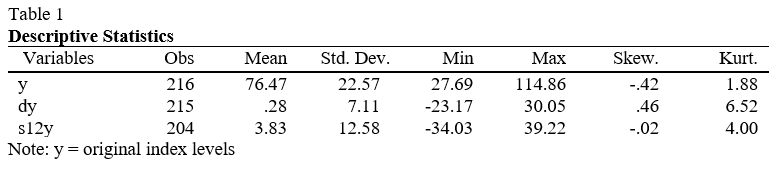Figure 1a displays the original time series running the total length of our observations. The index has slight negative skew with a large standard deviation relative to the transformations. Performing a naïve inspection of the time series shows me that there is a positive trend which looks potentially stochastic. The trend does not appear multiplicative and therefore a logarithmic transformation is not essential. Instead, I take the first difference in an attempt to induce stationarity. Figure 1b shows that this is effective. Further evidence is given in the descriptive statistics by the substantial reduction in standard deviation and a mean close to zero. However, this transformation creates a severely leptokurtic series. This is not a big problem as the central limit theorem will still hold for a sample size of this scale, although my preference is to have as Gaussian a distribution as possible. As previously mentioned, it is clear to see a positive trend in Fig 1a however it is unclear if there is a cyclical component.
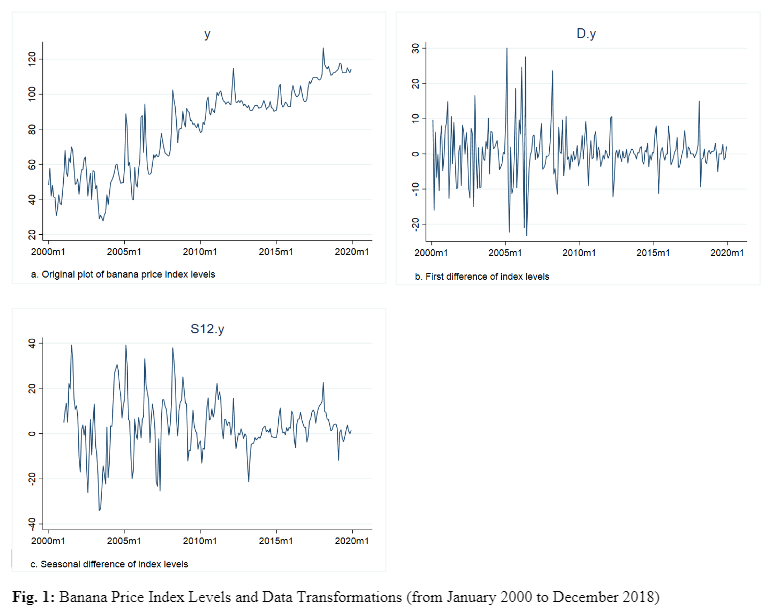To get a better idea of the cyclical properties of the data, I generated a plot of the average level of the index by month over the 20-year period. There is a noticeable disparity in the monthly averages. This is consistent with my review of relevant literature that the banana price index does exhibit seasonality. Indeed, the ETS (Error, Trend, Seasonality) decomposition, shown in Figure 2 concludes that the seasonal component accounts for a significant portion of the observed data. As the data is monthly, I decided to take the 12th difference of the index to remove the seasonality from the time series. The resulting transformation is plotted in Fig 1c and is represented by s12y in Table 1 and throughout this study. Although the standard deviation is slightly larger than dy, the distribution of values more closely follows a Gaussian distribution. However, these properties are not the most important when deciding which series to move forward with.
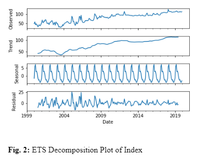To mitigate any risk of running spurious regressions later on in the analysis I must first ensure that the series is stationary. I will use the augmented Dickey-Fuller (ADF), Phillips-Perron and DF-GLS tests in order to determine the unit root properties of each transformation. The results are displayed in Table 2 below.
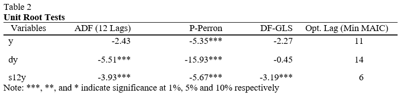The null hypothesis of the ADF and Phillips-Perron test is the presence of a unit root or, in other words, non-stationarity. The null hypothesis of the DF-GLS test is that the series is a random walk, the alternative hypothesis is different for the original series, y, and the transformed series. For y, the alternative hypothesis of the DF-GLS test is that the series is stationary about a linear time trend. For dy and s12y, the alternative hypothesis is that the series is stationary with a possibly nonzero mean but with no linear time trend. In order to determine the number of lags to include in the ADF test, I performed the ADF test manually with one lag, calculated the residuals from the regression and plotted them in a correlogram to visualize any serial correlation. There was serial correlation present up to lag 12 in all series, therefore the ADF test includes 12 lags. The results from Table 2 indicate that I can reject the null hypothesis for every test on the differenced and seasonally-differenced series with the exception of the dy series which failed to reject the DF-GLS null hypothesis of a random walk at the 10% significance level. The seasonally differenced series rejected the null hypotheses on all tests. The original time series, y, failed to reject the null hypotheses in the ADF and DF-GLS tests which indicates to me that the series requires differencing. More specifically, the results from Table 2 in conjunction with the descriptive statistics and plotted graphs indicate that the seasonally differenced series, s12y, is the most appropriate transformation to conduct further analysis on. In order to determine if this seasonality is stochastic or deterministic, I generated a new variable, z, which consists of the lagged values of y for one year of data:
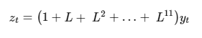Performing an ADF test on the first difference of z(t) results in the rejection of integration of order 2; however, I fail to reject integration of order 1 when testing z(t) with no differencing. This, along with the presence of seasonal effects in the autocorrelation function of dy motivates me to use a model with stochastic seasonality for the series y. Now that the original series has been stationarized, I can analyze the sample autocorrelations and sample partial autocorrelations to get an impression of the nature of the correlations in the time series. The sample autocorrelation function (ACF) and sample partial autocorrelation function (PACF) are shown in Figure 3a and b, respectively. From the ACF we can see significant positive spikes in lags 1-3 which suggest a non-seasonal MA(3) component and a significant negative spike in lag 12 which indicates the necessity for a seasonal MA(1) component. These spikes help decide the starting point for the model estimation process. Following from the ACF analysis, I will begin with a SARIMA(0,0,3)(0,1,1,12) model, indicating a 12-month seasonal difference along with seasonal and non-seasonal moving average components. Applying similar logic to the PACF would give a starting point of a SARIMA(1,0,0)(2,1,0,12) model.
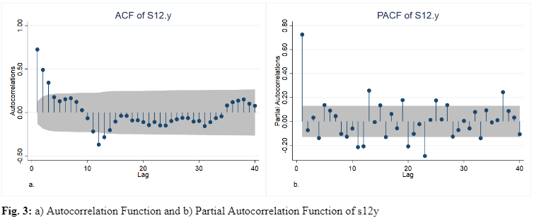I estimated a collection of models restricted by maximum non-seasonal AR and MA orders of 4 and seasonal orders of 2. Table 3 below shows the top 3 models determined by maximizing the log-likelihood and number of significant coefficients whilst minimizing the Akaike Information Criterion (AIC) and the Bayesian Information Criterion (BIC). The standard errors are given in brackets below each of the coefficient estimates. As you can see from the table, the model with the lowest AIC is SARIMA(4,0,2)(1,1,1,12). It also has the largest log likelihood. It is expected that the BIC is larger than some of its competitors as the BIC penalizes models based on the number of parameters in the model. However, the model has six significant coefficients, the lowest AIC and the largest log likelihood which means it is the best model to describe past observations.
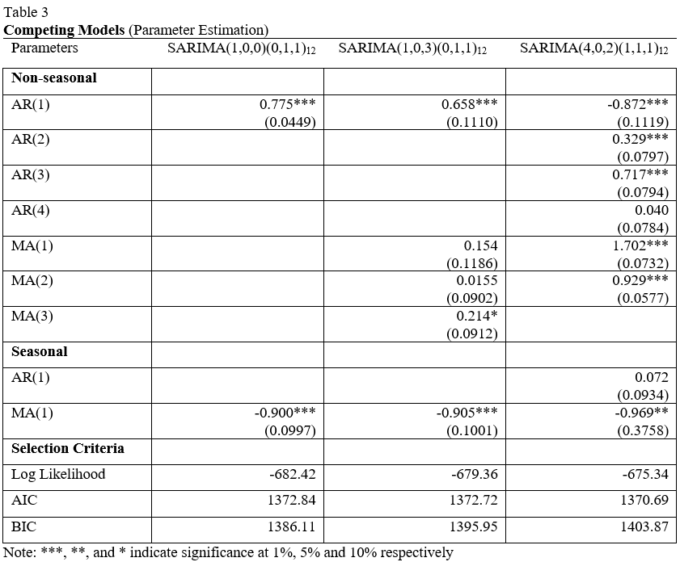Now that the models have been estimated, I can begin to perform diagnostic tests on the hypothesized models. First, I will begin by checking the eigenvalue stability condition of our SARIMA models. If the modulus of each eigenvalue is strictly less than 1, the estimated (S)ARMA process is stationary and invertible (Hamilton, 1994). This condition can be conveniently graphed by overlaying the inverse roots of the ARMA polynomials on the unit circle as shown in Figure 3 below. If all inverse roots lie inside the unit circle then the stability condition is satisfied. The modulus of each eigenvalue in all three proposed models are strictly less than 1, therefore I can be confident that the estimated SARMA processes satisfy the invertibility and stationarity conditions.
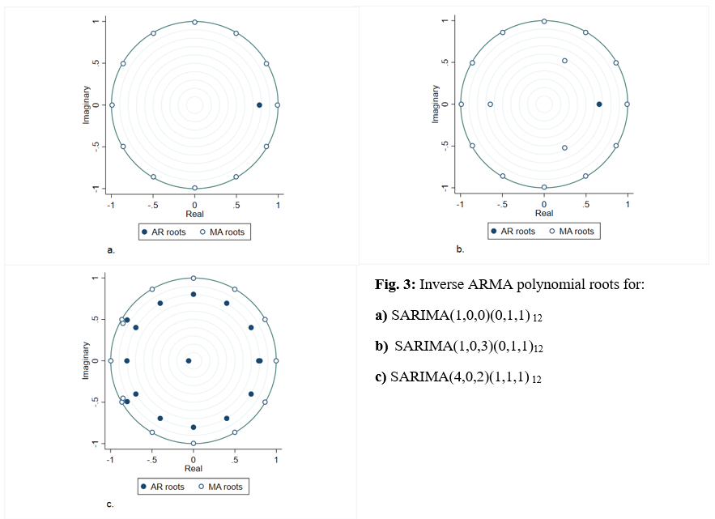A crucial component to any time series process is its autocorrelations. They offer us a window into the dependence structure of the estimated model process. For the model to be adequate, there should be no correlation between residuals. I will use the ACF/PACF of the residuals in order to get an idea of whether there may be any significant autocorrelation remaining in the models. There appears to be no significant autocorrelation remaining according to the ACF and PACF plots in Figure 4, which tells me that most of the information in the time series has been captured by the models.
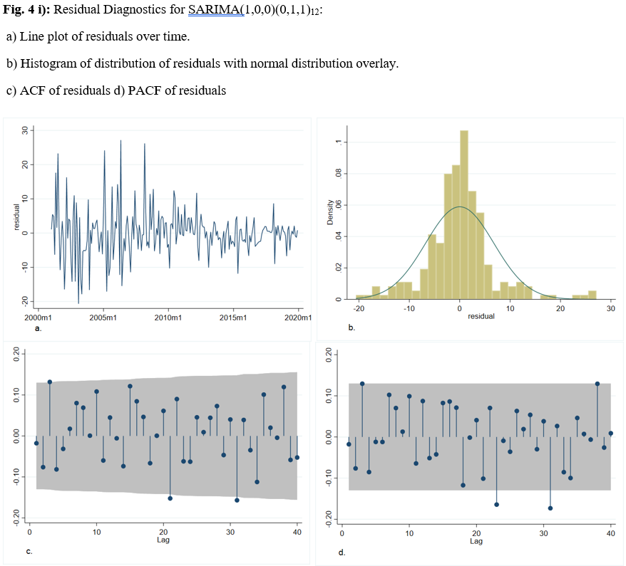However, according to the Box-Jenkins methodology, the residuals should follow a white a noise process. Therefore, to ensure that there is no serial correlation among residuals I must use a relevant statistical test. I chose to use the Breusch-Godfrey test for serial correlation. As I am using maximum likelihood to estimate the parameters in the SARIMA model, I must use maximum likelihood to estimate the parameters in the auxiliary regression in order to generate a reliable test statistic. The residual diagnostics, displayed in Table 4, show the results of the residual analysis – including Breusch-Godfrey p-values.
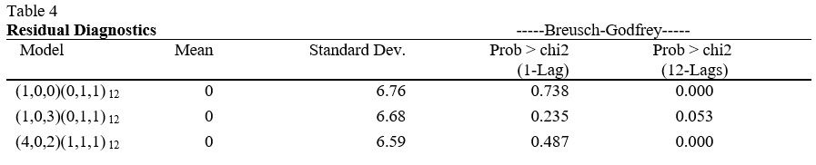From Table 4, you can see that the only model that failed to reject the null hypothesis of no serial correlation up to 12 lags at the 5% significance level was the SARIMA(1,0,3)(0,1,1,12). If I were to assume a first-order autoregressive error process then all three models would have failed to reject the null hypothesis and I would be able to rely on the estimates produced by all models. However, since I have monthly data, it is more realistic to assume that the current error may exhibit some correlation with past errors up to 12 periods prior. Under this assumption of an AR(12) process only the SARIMA(1,0,3)(0,1,1,12) model's parameter estimations are safe to rely on. Despite the presence of serial correlation in some models, I proceed to evaluate their forecasting performance. The forecast evaluation process is simple; I start by fitting the model on the training period defined previously, then forecast over the testing period using one-step ahead and multi-step ahead forecasting techniques. Once I have the forecasted values for the testing period, I can create evaluation metrics like root mean squared prediction error (RMSE) to compare the models. The best performing model will then be chosen to be fit over the complete time range (training and testing periods), then I will use that model to forecast over a specified future time period.
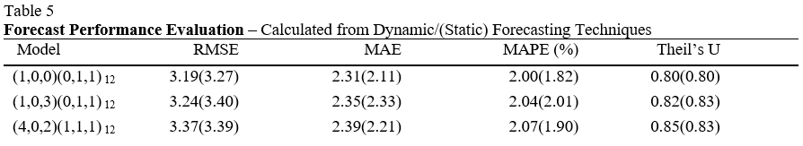It is important to be able to quantify the accuracy of the forecast models. I am looking to minimize error, so I employ four different comparison metrics: RMSE, mean absolute prediction error (MAE), mean absolute percentage prediction error (MAPE) and Theil’s U-statistic. I am looking to minimize all four of these metrics which are defined by the formulas below.
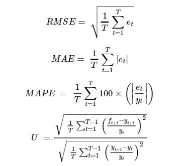Where y(t) represents the series of interest, f(t) is a forecast value of y(t) and e(t) is the forecast error [e(t) = y(t) - f(t)].
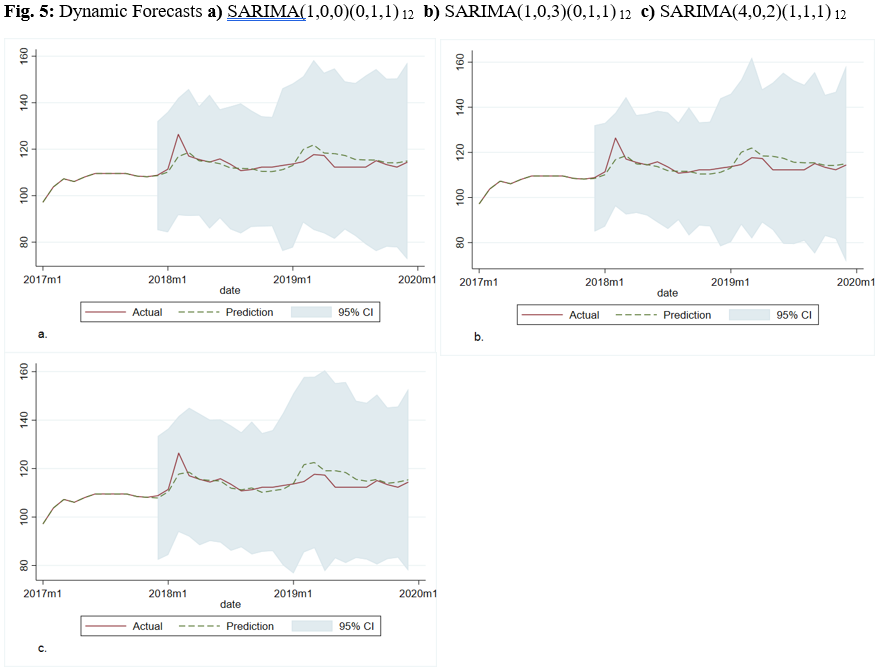From Table 5 and Figure 5, it is possible to make a direct comparison between competing forecast models. The parsimonious SARIMA(1,0,0)(0,1,1,12) model outperforms in every comparison metric. Whilst the plots show little variation among the model selections, the forecasting evaluation dictates that this model will provide me with the best possible forecast among the estimated models. This model can be expressed mathematically as:
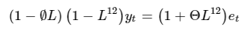Which, when expanded, can be written:
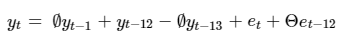In order to forecast one period into the future, I must shift each subscript by one period so to get a one-step ahead forecast equation:
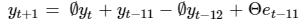Note that, since I cannot obtain e(t+1), I instead use the expected value of the residual which, as shown by Table 4, is zero. Substituting the coefficients from the parameter estimation in Table 3, I can enumerate the one-step ahead forecast equation like so:
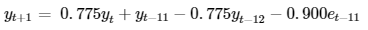In order to forecast into the future I must use dynamic forecasting methods. This means I will use forecasted values of the lagged dependent variable in place of the actual future observations – which I cannot know. I start by refitting the SARIMA(1,0,0)(0,1,1,12) model over the entirety of the data. I then forecast 12 months beyond the last observation. The forecast plot is depicted below, including a 95% confidence interval overlay. The top frame depicts the overall plot of the banana index levels, including the forecasted period of 12 months. The bottom frame is a close-up of the final segment of the data ranging from December 2017 to December 2020.
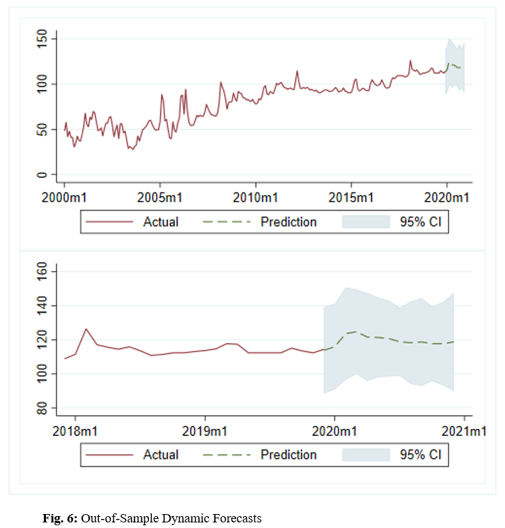It is well documented that ARIMA models have been successfully implemented on commodity data. The technical analysis carried out in this study supports past studies that have shown the seasonality of banana prices. This paper provides sufficient evidence that, within the confines of Box & Jenkins’ ARIMA methodology, Seasonal Autoregressive Integrated Moving Average models produce adequate results when used to forecast banana price fluctuations in the short term. This means that the implementation of SARIMA models in commodity import/export industries can produce tangible benefits. In particular, I identified a SARIMA(1,0,0)(0,1,1,12) model as having the most accurate and reliable forecasting capabilities.
Thanks for checking out my work using the Box-Jenkins methodology to develop seasonal forecasting models. If you enjoyed it and would like to see more of my work, please check out the links below.
Here I analyze the VaR of the returns on a portfolio of equities.
See Project
In this project I use machine learning (sklearn) to predict credit defaults.
See Project